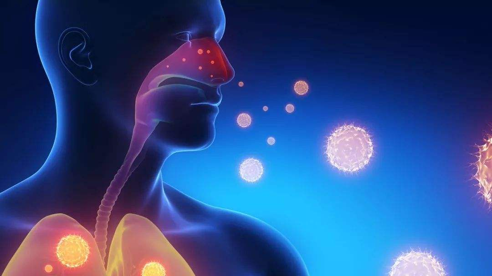

接触传播
飞沫沉积在物品表面，接触污染手后，在接触口腔、鼻腔、眼睛瞪黏膜，导致感染。
什么是飞沫传播？
一般认为直径>5um的含水颗粒。飞沫可以通过一定的距离（一般为1米）进入易感的粘膜表面。
飞沫产生：
(1)咳嗽、打喷嚏或说话；
(2)实施呼吸道侵入性操作，如：吸痰或支气管镜检查，气管插管或是翻身拍背等激咳嗽的过程中和心肺复苏等。

什么是接触传播？
直接接触：病原体通过粘膜或皮肤的直接接触传播。
(1)血液或带血体液经粘膜或破损皮肤进入人体
(2)直接接触含某种病原体的分泌物引起传播